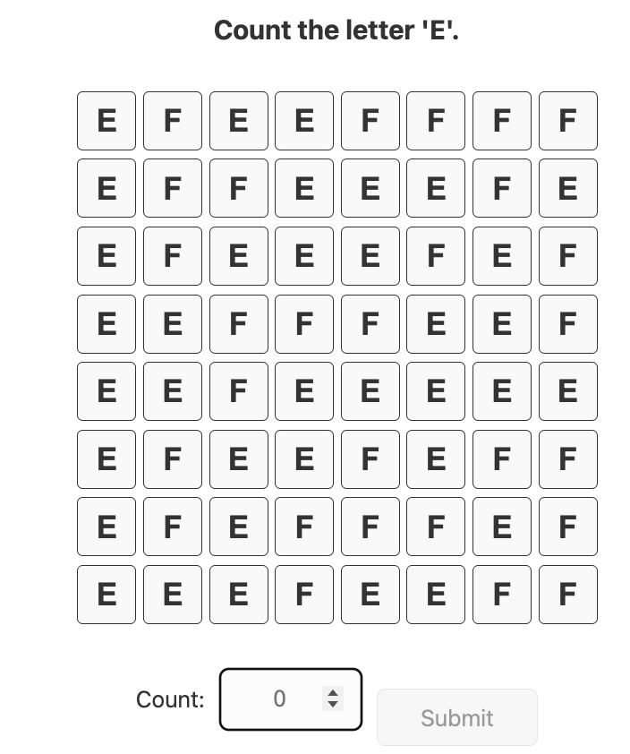
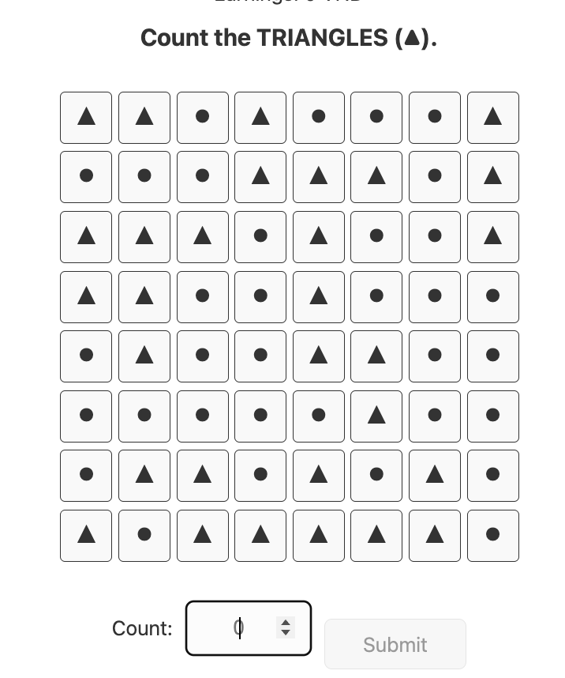

Instructions
Thank you for participating in this experiment.
In this task, you will be asked to count specific items. You may be asked to:
- Count the number of zeros (0) in a table containing 1s and 0s
- Count the number of letter “E” in a table containing E and F
- Count the number of triangles in a table containing triangles and circles



You will receive 620 VND for each correct answer.
The experiment will take approximately 10 minutes to complete. You may stop at any time without penalty.